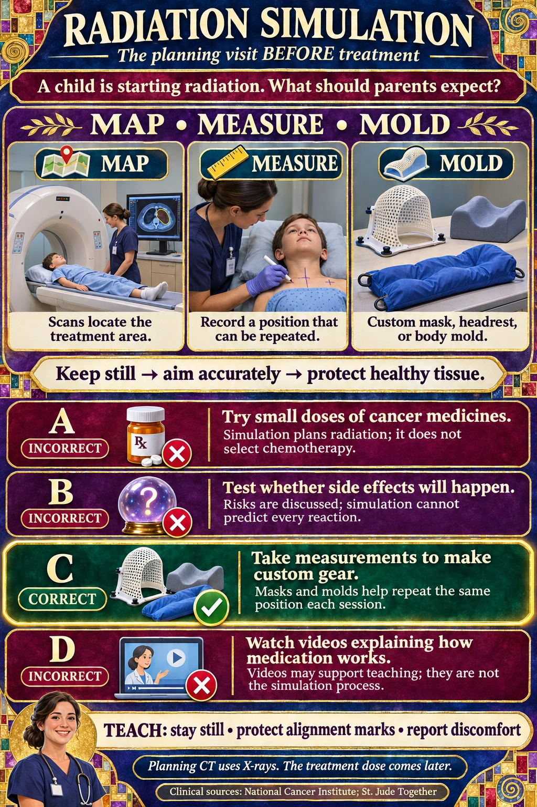

CT scanner
A large ring with a sliding table. Images help the team map the treatment area.
The planning visit before radiation treatment.
Scenario: a nurse is teaching parents of a child with cancer about radiation simulation. Which statement shows they understand the process?

The choices below are shortened for studying; their original A–D order is preserved.
Simulation plans radiation delivery. It does not select chemotherapy by trying medications.
The team discusses risks and plans to limit exposure to healthy tissue. Simulation is not a side-effect test that predicts every reaction a child will have.
A fitted mask, headrest or body mold helps keep the child still and in a consistent position at each session. Accurate positioning helps radiation reach the planned area while limiting exposure to nearby healthy tissue.
Videos can support education, but they do not define simulation. This visit is for imaging, positioning and treatment planning; radiation is not a chemotherapy medication.
Answer explanations apply the simulation purpose described by St. Jude [1] and NCI [2].
A large ring with a sliding table. Images help the team map the treatment area.
Small reference marks may be placed on the skin or mask to help reproduce the position.
A perforated mask molds to the head or face; its openings allow breathing. A shaped headrest supports positioning.
A cushion can be shaped around the body; removing air from a vacuum cushion helps it hold that shape.
The treatment site determines the equipment. Not every child needs every device. [1]
Planning is not the treatment dose. A planning CT does use X-rays. The therapeutic radiation session comes after the plan is prepared. [2]
Still → accurate aim → protect healthy tissue. These three picture cues appear across the top of the infographic.
Family preparation and positioning: St. Jude [1]; skin marks and planning: NCI [2].
No simulation-specific Simple Nursing handout was found in the current collection. The original infographic above covers this question; the video below is broader radiation-treatment review.
▶ Simple Nursing: radiation, brachytherapy & oncology medications · 4:19 ↗
Reviewed November 19, 2026.